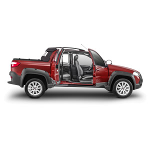

TERCERA PUERTA
Gracias a su tercera puerta, exclusiva de Fiat, los ocupantes pueden acceder fácilmente al vehículo y disfrutar de la amplitud y comodidad de su espacio interior. Esta solución ubica a la Strada en el top de las pick-ups livianas.
Su interior, que refleja el cuidado de lo esencial, refuerza su concepto, confiabilidad y capacidad. Incluye increíbles características de entretenimiento y seguridad que la ubican como una excelente alternativa para trabajar o disfrutar del tiempo libre en familia. Incluye aire acondicionado, radio con controles de audio en el timón, Bluetooth/AUX/USB y MP3, timón en cuero, brújula, inclinómetro longitudinal y transversal, barras te techo longitudinales, estribos laterales, vidrios y espejos eléctricos.
Gracias a su tercera puerta, exclusiva de Fiat, los ocupantes pueden acceder fácilmente al vehículo y disfrutar de la amplitud y comodidad de su espacio interior. Esta solución ubica a la Strada en el top de las pick-ups livianas.
La Strada Adventure cuenta con características de seguridad activa y pasiva que ofrecen protección a todos los ocupantes. Incorpora barras laterales contra impactos, airbag para conductor y acompañante, 4 cinturones de seguridad, sistema de frenos ABS y Distribución Electrónica de Frenado (EBD), entre otras.